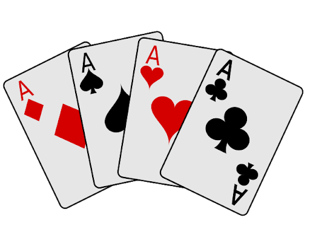

Curie en Ligne
Menu
Ressources pedagogiques

Cette partie du site contient des ressources pédagogiques: cours, exercices, annales, etc...
Ressources Pratiques
Vous trouverez ici des informations pratiques utiles: écoles doctorales, etc...
CurieOcards

Lien vers CurieOCards, un site pour jouer aux cartes en lignes entre étudiants.
Créé pendant le confinement de 2020 et opéré par les étudiants de l'association CurieOsity.
Loutres

Ce dossier contient des images de loutres.
Parce que pourquoi pas.
Parce que pourquoi pas.